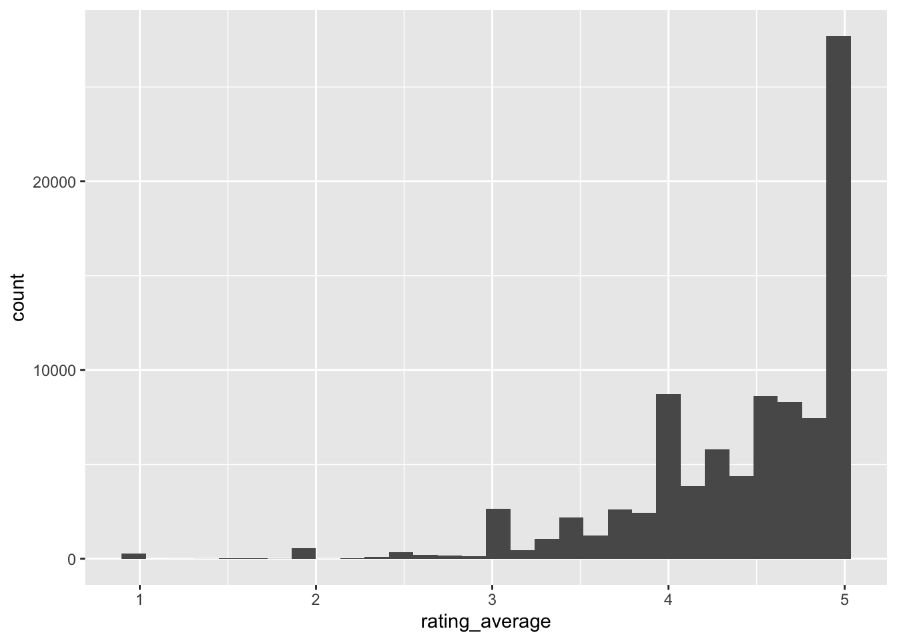
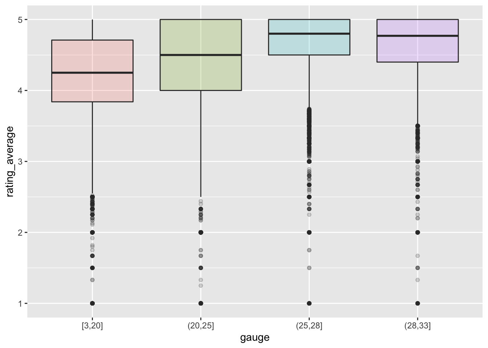
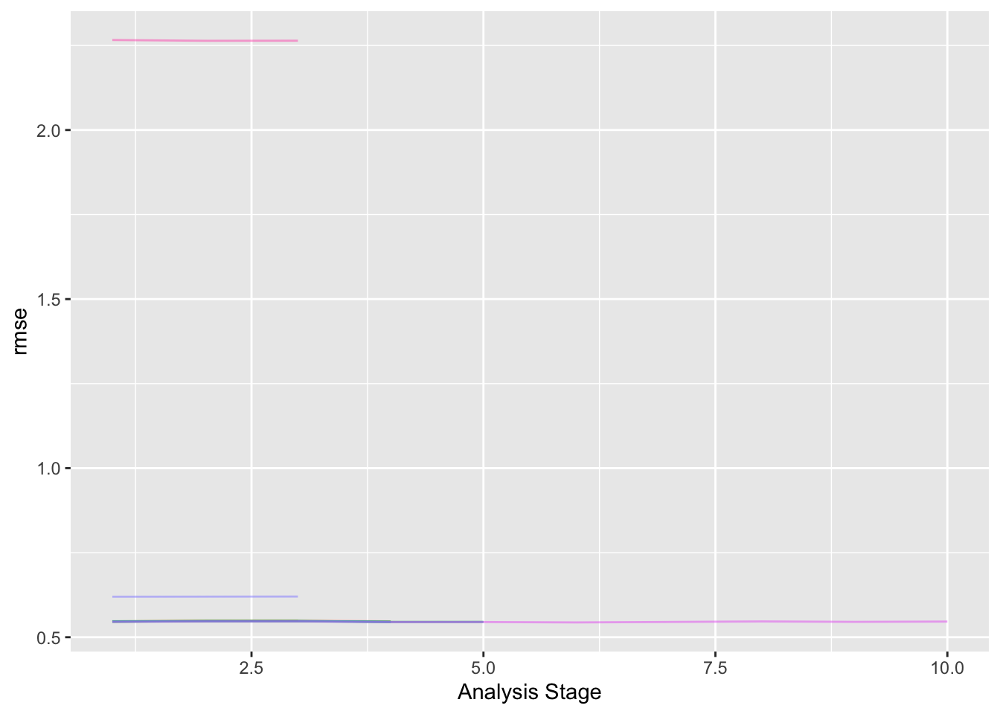
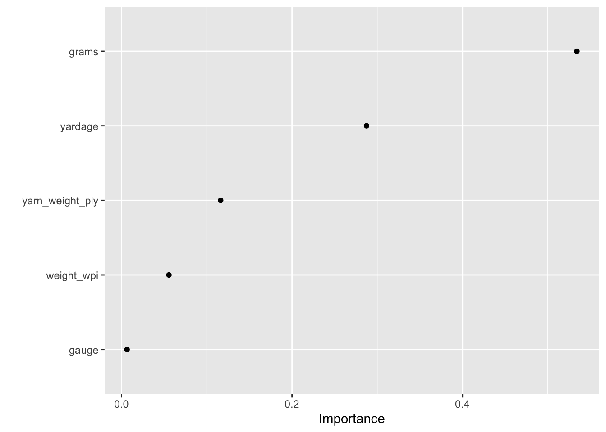
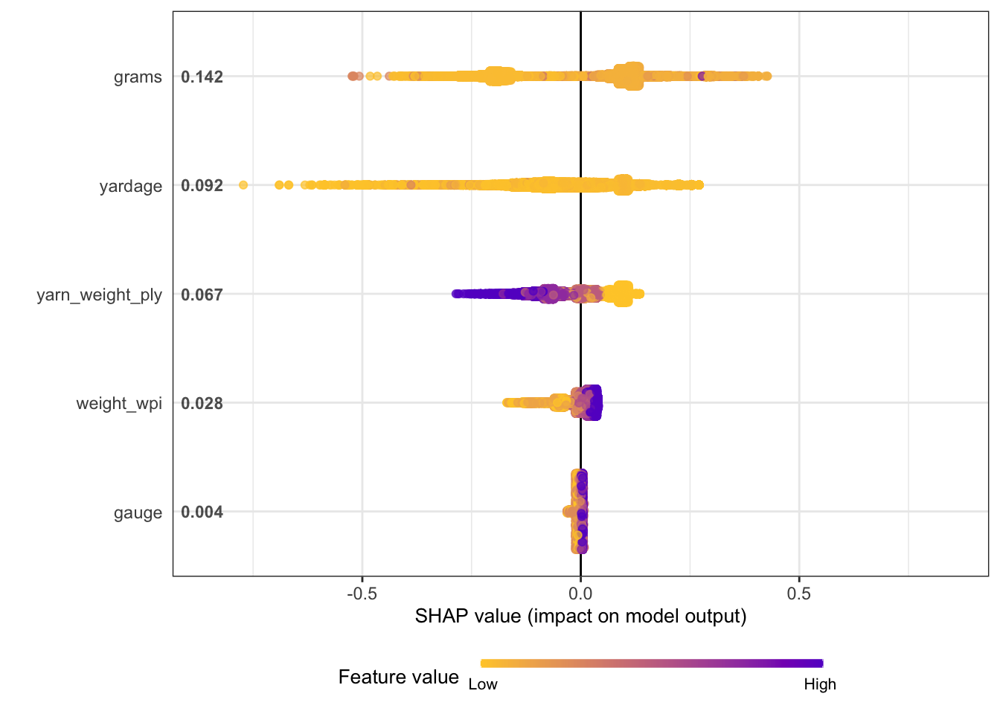
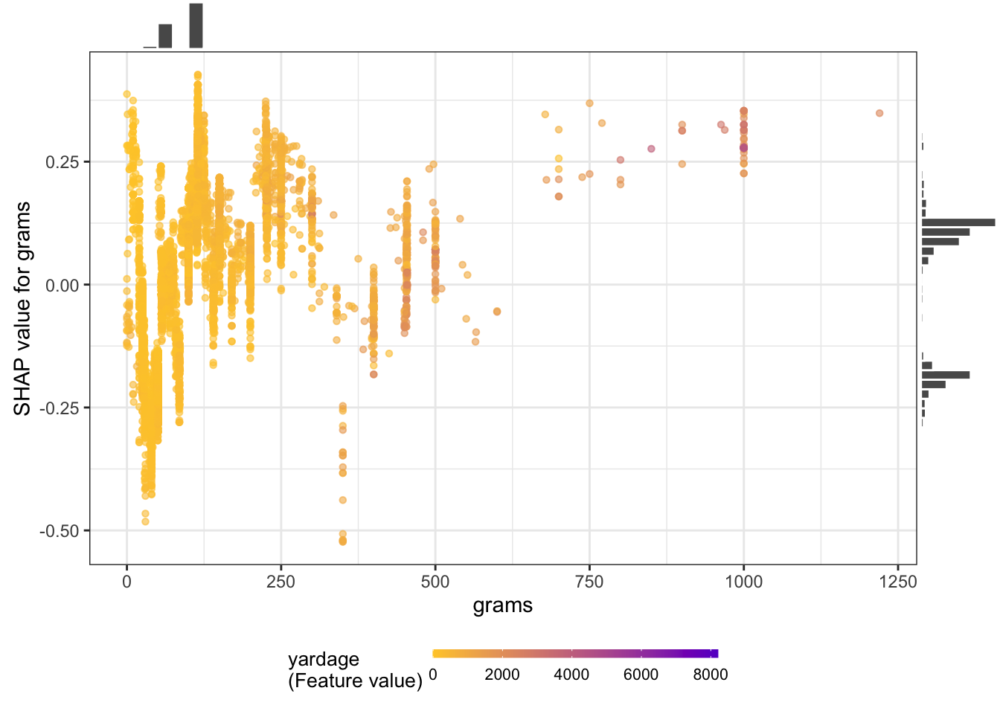

Yarn
The Data
The data this week comes from ravelry.com by way of Alice Walsh.
yarn <- read_csv("yarn.csv") %>%
mutate(gauge = sapply(strsplit(yarn_weight_knit_gauge,
split = "-", fixed = TRUE), function(k) mean(as.numeric(k)))) %>%
mutate(weight_wpi = sapply(strsplit(yarn_weight_wpi,
split = "-", fixed = TRUE), function(k) mean(as.numeric(k)))) %>%
separate(texture_clean, into = "texture1",
sep = ",", extra = "drop", remove = FALSE) %>%
mutate(texture_tidy = forcats::fct_lump_n(texture1, 10))Predicting ratings
The analysis is extensively derived from Julia Silge’s blog predicting ratings of board games.
yarn %>%
ggplot(aes(x = rating_average)) +
geom_histogram()
Are the ratings related to the yarn_weight_knit_gauge? Seems like there is a relationship, hopefully the model will pick it up.
yarn %>%
filter(!is.na(gauge)) %>%
mutate(gauge = cut_number(gauge, 4)) %>%
ggplot(aes(x=gauge, y=rating_average, fill = gauge)) +
geom_boxplot(alpha = 0.2, show.legend = FALSE)
Tune an xgboost model
library(tidymodels)
set.seed(123)
yarn_split <-
yarn %>%
select(permalink, rating_average, grams, yardage, #texture_tidy,
yarn_weight_ply, weight_wpi, gauge) %>%
na.omit() %>%
initial_split()
yarn_train <- training(yarn_split)
yarn_test <- testing(yarn_split)
set.seed(234)
yarn_folds <- vfold_cv(yarn_train)
yarn_folds# 10-fold cross-validation
# A tibble: 10 × 2
splits id
<list> <chr>
1 <split [43978/4887]> Fold01
2 <split [43978/4887]> Fold02
3 <split [43978/4887]> Fold03
4 <split [43978/4887]> Fold04
5 <split [43978/4887]> Fold05
6 <split [43979/4886]> Fold06
7 <split [43979/4886]> Fold07
8 <split [43979/4886]> Fold08
9 <split [43979/4886]> Fold09
10 <split [43979/4886]> Fold10Feature engineering
It doesn’t seem like we need to do much feature engineering. The variables are mostly numeric, and the texture is already a factor variable.
yarn_rec <-
recipe(rating_average ~ ., data = yarn_train) %>%
update_role(permalink, new_role = "id")
## just to make sure this works as expected
yarn_prep <- prep(yarn_rec)
bake(yarn_prep, new_data = NULL) %>% str()tibble [48,865 × 7] (S3: tbl_df/tbl/data.frame)
$ permalink : Factor w/ 48865 levels "--coton-cable",..: 41723 28626 40466 13968 11276 6018 39308 6676 21038 41583 ...
$ grams : num [1:48865] 100 100 150 50 50 100 100 50 100 50 ...
$ yardage : num [1:48865] 437 401 500 219 113 186 463 136 437 98 ...
$ yarn_weight_ply: num [1:48865] 4 4 4 4 10 10 4 4 4 10 ...
$ weight_wpi : num [1:48865] 14 14 14 14 9 8 14 14 14 8 ...
$ gauge : num [1:48865] 28 28 28 28 20 18 28 28 28 18 ...
$ rating_average : num [1:48865] 3.33 5 4.88 4 3.13 4 5 5 4.56 4 ...
- attr(*, "na.action")= 'omit' Named int [1:34846] 9 10 15 16 28 41 46 49 65 66 ...
..- attr(*, "names")= chr [1:34846] "9" "10" "15" "16" ...Create xgboost model
In the xgboost model we’ll train the number of trees, mtry, and min_n, the smallest number of observations that will lead to a node being split.
xgb_spec <-
boost_tree(
trees = tune(),
mtry = tune(),
min_n = tune(),
learn_rate = 0.01
) %>%
set_engine("xgboost") %>%
set_mode("regression")
xgb_wf <- workflow(yarn_rec, xgb_spec)
xgb_wf══ Workflow ════════════════════════════════════════════════════════════════════
Preprocessor: Recipe
Model: boost_tree()
── Preprocessor ────────────────────────────────────────────────────────────────
0 Recipe Steps
── Model ───────────────────────────────────────────────────────────────────────
Boosted Tree Model Specification (regression)
Main Arguments:
mtry = tune()
trees = tune()
min_n = tune()
learn_rate = 0.01
Computational engine: xgboost I don’t think we really need it because we don’t have too many parameters, but to follow Julia’s structure, we can use the tune_race_anova() function to eliminate parameter combinations that don’t predict well.
library(finetune)
doParallel::registerDoParallel()
set.seed(234)
xgb_yarn_rs <-
finetune::tune_race_anova(
xgb_wf,
yarn_folds,
grid = 10,
control = control_race(verbose_elim = TRUE)
)
xgb_yarn_rs# Tuning results
# 10-fold cross-validation
# A tibble: 10 × 5
splits id .order .metrics .notes
<list> <chr> <int> <list> <list>
1 <split [43978/4887]> Fold03 1 <tibble [20 × 7]> <tibble [0 × 3]>
2 <split [43978/4887]> Fold05 2 <tibble [20 × 7]> <tibble [0 × 3]>
3 <split [43979/4886]> Fold10 3 <tibble [20 × 7]> <tibble [0 × 3]>
4 <split [43979/4886]> Fold06 4 <tibble [14 × 7]> <tibble [0 × 3]>
5 <split [43979/4886]> Fold08 5 <tibble [6 × 7]> <tibble [0 × 3]>
6 <split [43978/4887]> Fold01 6 <tibble [2 × 7]> <tibble [0 × 3]>
7 <split [43978/4887]> Fold02 8 <tibble [2 × 7]> <tibble [0 × 3]>
8 <split [43978/4887]> Fold04 7 <tibble [2 × 7]> <tibble [0 × 3]>
9 <split [43979/4886]> Fold07 10 <tibble [2 × 7]> <tibble [0 × 3]>
10 <split [43979/4886]> Fold09 9 <tibble [2 × 7]> <tibble [0 × 3]>plot_race(xgb_yarn_rs)
show_best(xgb_yarn_rs)# A tibble: 5 × 10
.order mtry trees min_n .metric .estimator mean n std_err .config
<int> <int> <int> <int> <chr> <chr> <dbl> <int> <dbl> <chr>
1 9 4 1828 38 rmse standard 0.535 1 NA Preprocessor1…
2 6 4 1828 38 rmse standard 0.538 1 NA Preprocessor1…
3 4 3 1362 20 rmse standard 0.539 1 NA Preprocessor1…
4 4 4 1828 38 rmse standard 0.539 1 NA Preprocessor1…
5 4 3 1766 3 rmse standard 0.539 1 NA Preprocessor1…Let’s use last_fit() to fit one final time to the training data and evaluate one final time on the testing data.
xgb_last <-
xgb_wf %>%
finalize_workflow(select_best(xgb_yarn_rs, "rmse")) %>%
last_fit(yarn_split)
xgb_last# Resampling results
# Manual resampling
# A tibble: 1 × 6
splits id .metrics .notes .predict…¹ .workflow
<list> <chr> <list> <list> <list> <list>
1 <split [48865/16289]> train/test split <tibble> <tibble> <tibble> <workflow>
# … with abbreviated variable name ¹.predictionsAn xgboost model is not directly interpretable but we have several options for understanding why the model makes the predictions it does. Check out Chapter 18 of Tidy Modeling with R for more on model interpretability with tidymodels.
Let’s start with model-based variable importance using the vip package.
library(vip)
xgb_fit <- extract_fit_parsnip(xgb_last)
vip(xgb_fit, geom = "point", num_features = 12)
grams and yardage are the most important predictors driving the predicted yarn rating.
We can also use a model-agnostic approach like Shapley Additive Explanations, where the average contributions of features are computed under different combinations or “coalitions” of feature orderings. The SHAPforxgboost package makes setting this up for an xgboost model particularly nice.
We start by computing what we need for SHAP values, with the underlying xgboost engine fit and the predictors in a matrix format.
library(SHAPforxgboost)
yarn_shap <-
shap.prep(
xgb_model = extract_fit_engine(xgb_fit),
X_train = bake(yarn_prep,
has_role("predictor"),
new_data = NULL,
composition = "matrix"
)
)Now we can make visualizations! We can look at an overall summary:
shap.plot.summary(yarn_shap)
Or create partial dependence plots for specific variables:
shap.plot.dependence(
yarn_shap,
x = "grams",
color_feature = "yardage",
size0 = 1.2,
smooth = FALSE, add_hist = TRUE
)
I don’t really know what the plots show, but I think the big idea is that there aren’t clean linear relationships between the variables. xgboost is good at modeling complicated relationships.